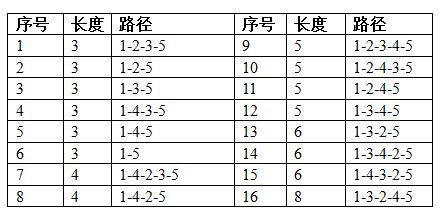

输入第一行包含五个正整数n, m, k, a, b。以下m行每行三个整数u, v, l，表示从城市u到城市v有一条长度
为l的单向道路。100%的数据满足：2<=n<=50, 1<=k<=200
有n个城市和m条单向道路，城市编号为1~n。每条道路连接两个不同的城市，且任意两条道路要么起点不同要
么终点不同，因此n和m满足m<=n(n-1)。给定两个城市a和b，可以给a到b的所有简单路（所有城市最多经过一次，
包括起点和终点）排序：先按长度从小到大排序，长度相同时按照字典序从小到大排序。你的任务是求出a到b的第
k短路。
输入第一行包含五个正整数n, m, k, a, b。以下m行每行三个整数u, v, l，表示从城市u到城市v有一条长度
为l的单向道路。100%的数据满足：2<=n<=50, 1<=k<=200
如果a到b的简单路不足k条，输出No，否则输出第k短路：从城市a开始依次输出每个到达的城市，直到城市b，
中间用减号"-"分割。
【样例输入1】
5 20 10 1 5
1 2 1
1 3 2
1 4 1
1 5 3
2 1 1
2 3 1
2 4 2
2 5 2
3 1 1
3 2 2
3 4 1
3 5 1
4 1 1
4 2 1
4 3 1
4 5 2
5 1 1
5 2 1
5 3 1
5 4 1
【样例输入2】
4 6 1 1 4
2 4 2
1 3 2
1 2 1
1 4 3
2 3 1
3 4 1
【样例输入3】
3 3 5 1 3
1 2 1
2 3 1
1 3 1
【样例输出1】
1-2-4-3-5
【样例输出2】
1-2-3-4
【样例输出3】
No第一个例子有5个城市，所有可能出现的道路均存在。从城市1到城市5一共有5条简单路
